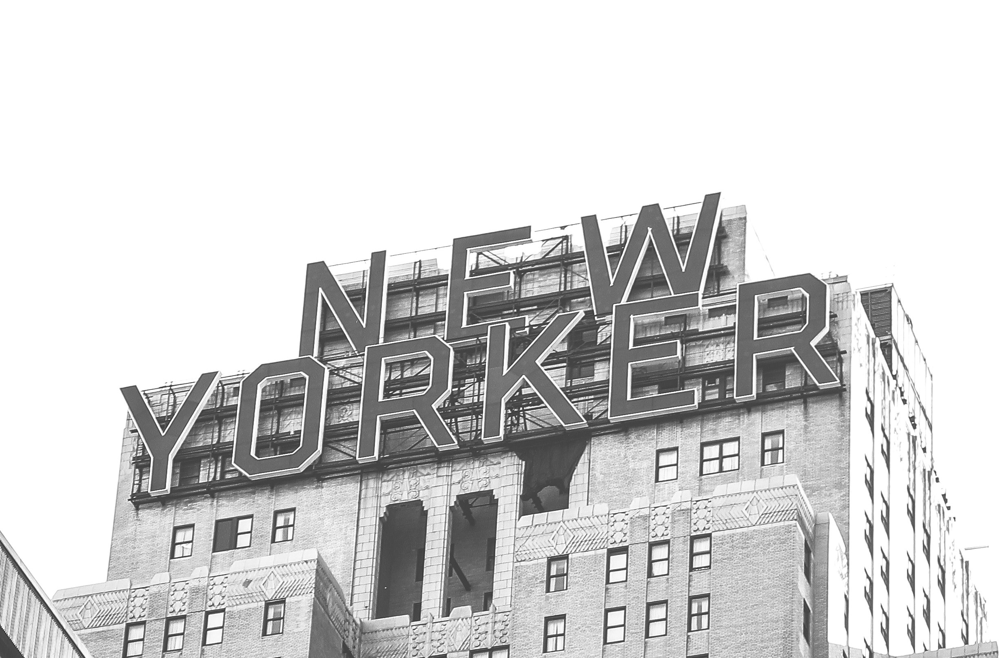

I am a big fan of New York.
When I was a middle and high school student, I heard that New York was a place where many different races lived and different cultures coexist. I also saw pictures and writings about the Statue of Liberty, the Brooklyn Bridge, the Empire State Building, the yellow cab, and so on. When I was young, could I go on a trip to that place?I thought so, but I was able to live in New York after I became an adult and came to New York to live in New York, so I am having fun and thankful. In my life, New York was a more attractive city and I want to keep living. So I'm a big fan of New York over and over again.
Therefore, I want to make the subject of this final project New York. I want to introduce through the media how nice and nice city I live in New York.